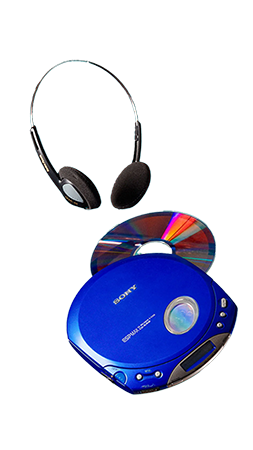

THE SONY DISCMAN
DISCOVERIntroducing the Ultimate '90s Nostalgia
Step back in time to the era when music was pure magic and the Discman reigned supreme! The Discman, or simply the "Discman player," was the iconic portable compact disc (CD) player that captured hearts in the late 1980s and 1990s - and now it can be yours!
RELIVE THE MAGIC
Remember when music was a physical experience, and every CD was a treasure trove of melodies waiting to be explored? The Discman was your passport to musical adventures on the go. Now, you can relive those moments and introduce a new generation to the joy of CDs.